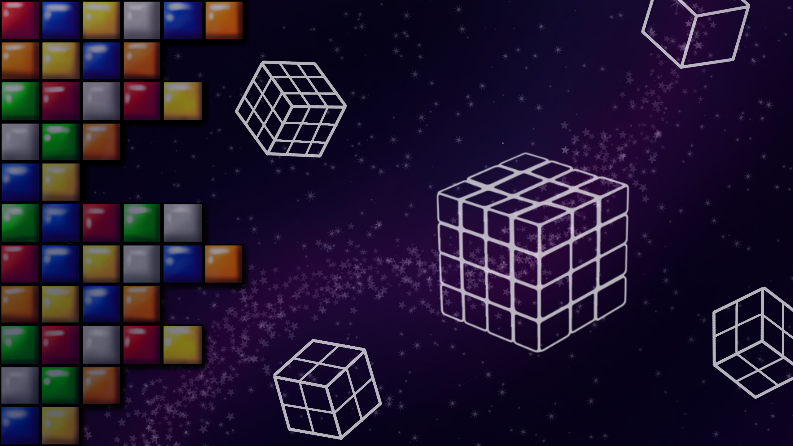

Coffe - O Fotográfo

Coffe tem um olhar único para capturar a beleza do mundo através das lentes de sua câmera. Em sua página, você encontrará uma coleção de fotografias que refletem sua visão artística e paixão por documentar momentos especiais.
Carlos - O Capoeirista
Carlos é um capoeirista apaixonado que vive e respira a arte da Capoeira. Em sua página, ele explora a história, os movimentos e a cultura por trás desta arte marcial brasileira. Aprenda mais sobre a Capoeira e como ela combina luta, dança e música em uma forma de expressão única.
Decfalter - O Speedcuber
Decfalter é um verdadeiro mestre do Cubo Mágico. Ele compartilha um trecho da evolução do cubo mágico, desde sua criação ao dias contemporâneos. Acompanhe sua postagem para deslumbrar sobre um pouco mais sobre o assunto.
Emo - O Tatuador
Emo é um tatuador talentoso que transforma a pele em uma tela viva. Em sua página, ele mostra seus designs criativos e fala sobre o processo de criação e a arte de tatuar. Conheça suas inspirações e veja como ele transforma ideias em arte corporal.
Pedrinho - O Entusiasta do Brawlhalla
Pedrinho é um entusiasta do jogo Brawlhalla, um popular jogo de luta online. Ele compartilha estratégias, análises de personagens e dicas para melhorar suas habilidades no jogo.